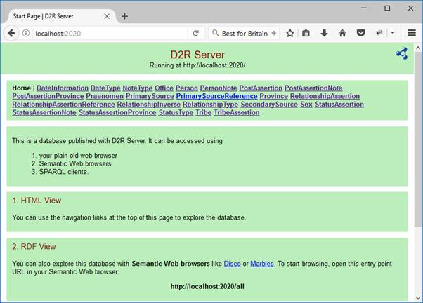
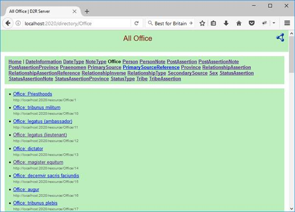
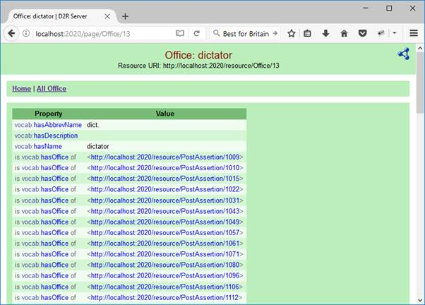

DPRR’s data is served from an instance of the rdf4j-generated RDF repository, but weas created in a relational database. So, to get the data from DPRR’s relational database into a set of triples required some software, some scripts, and a process that linked them together. Here I will briefly describe how this process was carried out.
The package D2RQ (http://d2rq.org/) was the main tool used to take the data from the relational database into a corresponding set of RDF triples. This is, indeed, D2RQ's job: as its website says, D2RQ “exposes the contents of relational databases as RDF”. Indeed, it has been used directly to publish dynamic data (for several life sciences projects) that is created and maintained in relational databases so that it can also be accessed as Open RDF data.
Thus, D2RQ is interesting because it can do to things that might have been directly useful for the expression of DPRR as RDF. First, it can act as an RDF server itself, displaying data that is actually in a relational database but presented as a collection of RDF triples. When run this way, one can see the RDF data it is presented by connecting to it through a browser:

Then, looking at one of the RDF entities shown here, say, “Office”, one is shown the URIs that are associated with the “Office” class:

Choosing one of the Offices (say, dictator), D2RQ will display the triples associated with that office:

The D2RQ architecture figure provided in the D2RQ documentation shows how this works. We can see the HTML browser shown above as the third box on the left, and can see how it connects to the Non-RDF Database (for DPRR, this is a Postgres database) on the right:

(From http://d2rq.org/images/architecture.png)
Although D2RQ’s server can represent relational data as RDF triples, DPRR, for reasons given below, does not use the D2R Server directly to simply serve data from DPRR’s relational database as RDF. Instead, it uses the other service that D2RQ can offer: the RDF dump tool that generates pure RDF in a file that can be subsequently loaded into a separate triple store. In the diagram the path to DPRR’s triple store comes from the bottom left box labelled “Triple Store”.
A key element in the use of D2RQ is the D2RQ Mapping File (shown in the diagram above near its centre) which provides the D2RQ engine with the instructions (expressed as a sequence of RDF statements) about how to translate the entities, attributes and relationships of the relational (“non-RDF”) database into triples. In the DPRR project work, this file is called dprr-mapping.ttl.
The information conveyed in this file is quite rich, and it is beyond the scope of this document to explain it in detail. You can get the details for the “Mapping Language” that it expresses from D2RQ’s documentation at http://d2rq.org/d2rq-language. However, a couple of short examples are still useful for us here.
First, let us look at a fragment that expresses the relationship between the database table for offices and the RDF expression of this data that D2RQ generates. The mapping from a database table to an RDF class is provided by an d2rq:ClassMap instance (shown here in RDF’s turtle notation):
map:Office a d2rq:ClassMap; d2rq:dataStorage map:database; d2rq:uriPattern "Office/@@promrep_office.id@@"; d2rq:class vocab:Office; d2rq:classDefinitionLabel "Office"; .
The d2rq:class statement
expresses the connection for our RDF “Office” class. It specifies that each instance of the RDF Office class will
have an associated URI, and the d2r1:uriPattern statement provides a
template for it, in this case drawing on the id field of the database’s promrep_office
table.
The connection between attributes
in a relational database’s table, and the properties of an RDF class is
provided by a d2rq:PropertyBridge. Here is a simple example:
map:officeName a d2rq:PropertyBridge; d2rq:belongsToClassMap map:Office; d2rq:property vocab:hasName; d2rq:propertyDefinitionLabel "Office name"; d2rq:column "promrep_office.name"; .
The property name for the RDF representation is given
by the d2rq:property statement. The connection of this property to the
Office class and table comes from the d2rq:belongsToClassMap statement,
and the association to the particular table’s attribute is provided by the d2rq:column
statement.
This example of a PropertyBridge defines a property that in OWL would be considered to be a owl:DatatypeProperty, but of course not all properties are simple DataProperties. Indeed, the definition for an owl:ObjectProperty must be rather different since it involves a relational join rather than a simple reference to an attribute of a table. Furthermore, there are other expressions for other kinds of data from the DB that needs to be mapped to OWL properties. We do not provide examples here, although full examples are available from d2rq's documentation for its mapping language.
The entire mapping file for DPRR
consists of about 1800 lines/RDF statements. That’s a lot of stuff to create
accurately by hand. And so D2RQ provides a utility tool, called generate-mapping
that reads the structure in the relational database and creates a preliminary mapping
file that maps all the data in the relational database into instructions that
will cause D2RQ to present it.
Although this tool provided a starting form for DPRR’s mapping file, it was clear to me that could not be used without being edited significantly. Here are the bits of RDF that corresponds to Office and officeName as it appeared in the originally generated file:
map:promrep_office a d2rq:ClassMap; d2rq:dataStorage map:database; d2rq:uriPattern "promrep_office/@@promrep_office.id@@"; d2rq:class vocab:promrep_office; d2rq:classDefinitionLabel "promrep_office"; . map:promrep_office_name a d2rq:PropertyBridge; d2rq:belongsToClassMap map:promrep_office; d2rq:property vocab:promrep_office_name; d2rq:propertyDefinitionLabel "promrep_office name"; d2rq:column "promrep_office.name"; .
Note that the names for the class
and attributes are not as “user friendly” as what we have used in our mapping
file. This is because all generate-mapping had to work with was the
table and attribute names in the database, and the DPRR database is actually
created and managed by Django, and so the naming conventions used reflect
django’s needs and are not particularly convenient to use as public names in
RDF.
It turns out that many changes
had to be made to the file;s text to take the raw mapping file generated by generate-mapping
into the form used to actually generate the RDF data used by DPRR. Among the
various issues that needed to be dealt with were:
Furthermore, there were several more global changes, not listed here, that had to be made to make the mapping for DPRR work more naturally as RDF data.
The work to do all these by hand would have been tedious and subject to error. Thus, the process of fixing up the data was expressed as a sequence of individual steps. Those that could be automated were carried out by little python scripts that took one version of the file in, performed a set of automated changes, and generated a new version out. Not all the steps were able to be automated. In the end, there were 14 automated and by-end steps of transformation to the mapping file.
In the end, however, we had a d2rq mapping file that allowed the d2rq server to present a pretty
good (but not completely satisfactory, see below) representation
of the RDF statements that were to be served by DPRR’s RDF server. The next step, then, was to
develop a process that used d2rq’s tool (called dump-rdf) to generate a set
of RDF statements from the database using its mapping file as a guide.
Dump-rdf largely generated a good
set (about a 3rd of a million) of directly usable RDF statements.
However, there were still a few refinements that I wanted to make to this
automatically generated RDF data.
All these refinements on the
dumped data from d2rq could have been perhaps handled directly within d2rq,
resulting in a file that could be simply directly loaded into the DPRR RDF
server. However, I chose, instead, to write a python script (called
processttl.py) that took the version of RDF data that dump-rdf had generated and made all the
changes outlined above, creating a new turtle file called dppr_clean.ttl. It
was this file that was to be loaded into the DPRR RDF server.
Now that we had a way to generate the RDF triples from the DPRR relational database, we needed a way to serve them.
A number of different software development projects worldwide have created toolkits for RDF servers. I chose rdf4j as the platform for building DPRR’s particular RDF server, since rdfj4 was a Java-based platform that included many components I knew we were going to need to make DPRR’s server work in the way I wanted. In particular, I liked the part of rdf4j called the workbench which operated as a Tomcat web application and that out of the various platforms I looked at seemed to me to best provide access to the RDF data in ways that assisted the user to grasp how the data was structured.
There was, however, an issue with the rdf4j workbench as it came "out of the box": the workbench provided a full set of tools not only to interact with existing RDF data but to change it too — including allowing its user to replace or remove some or all the RDF triples in its repository. Furthermore, the administrative system to manage permissions for data users in such a way that the DPRR data administrator would be able to update the data while ordinary users could not, was not sufficiently clearly laid out so that I was confident that I could readily control this.
So, I decided to use the rdf4j workbench code as the basis for DPRR’s RDF server but to make several changes to the way that it operates “out of the box”. As a result:
uk.ac.kcl.ddh.jb.rdf.server.All this work was done by setting up the rdf4j workbench code in Eclipse via an Eclipse “web” project, and working on it there. The changes were relatively minor. The base Java code that came from rdf4j for the workbench classes was altered in a few trivial ways. In addition, to provide the data-oriented services (support for entity URIs, and the basic SPARQL endpoint: the features mentioned in the last point above) I had to add a small number of my own classes. Of course, the various “web content pages” had to be altered too to bring in elements of DPRR’s livery, and to remove references to services that the out-of-the-box rdf4j workbench offered but that were not to be made available in the DPRR’s RDF server.
This work on the web content pages revealed what was, to me, something interesting: the rdf4j workbench operates in an unusual way as a server of pages for a web browser in that it actually makes use of browsers that support XML and XSLT — sending XML that it generates as the data, with a reference to an XSLT stylesheet that, on the browser, gets transforms into HTML for proper display. Thus, one of the jobs I needed to do was alter the stylesheets (particularly the “template.xsl”, but others too) to remove all HTML links to services that the DPRR RDF server was not going to offer. In addition, unwanted functionality was removed, and new functionality added, to the WEB-INF/web.xml file.
The entire Eclipse project in which DPRR's RDF server is licenced as open source through the EPL license for the Java code, and Creative Commons for the non-Java elements. In addition, it is available for anyone to use through a github repository at johnBradley501/uk.ac.kcl.cch.dprr.rdf.server
Having now created mechanisms to generate the RDF data, and having built an RDF server based on the stripped down (and somewhat extended) rdf4j workbench, I was ready to turn my attention to an ontology for DPRR.
I chose to use rdf4j’s memory repository that supported RDF Schema inferencing (according to rdf4j documentation at (http://docs.rdf4j.org/javadoc/2.0/org/eclipse/rdf4j/sail/inferencer/fc/ForwardChainingRDFSInferencer.html) it follows the rules from the RDF Semantics Recommendations (https://www.w3.org/TR/2004/REC-rdf-mt-20040210/#rdfs_interp). Furthermore, in my view information about data in terms of a class-subclass structure makes it easier for a human to grasp. These two reasons, then, meant that it was worthwhile constructing the DPRR Ontology in ways that made use of class-subclass structuring mechanisms. D2RQ, which generates DPRR's RDF statements, does not provide direct support for a subclassing model, in part because the ideas in subclassing are available, if at all, only implicitly in relational database semantics. Thus, the class-subclass structure that is presented in DPRR’s ontology had to be constructed by me entirely “by hand”. D2RQ is not aware of this class hierarchy at all.
I chose to express the ontology in terms of the OWL language (https://www.w3.org/OWL/), although I only used a few basic constructs of OWL. You can find the DPRR ontology at:
http://romanrepublic.ac.uk/rdf/ontology#
A certain amount of the material (base classes and properties) in the DPRR ontology could be generated automatically from the information D2RQ has in its mapping file. Thus, I loaded the DPRR mapping file, which is in RDF, into a temporary RDF store using rdf4j’s workbench, and ran SPARQL construct queries against it to create preliminary components of what was going to become the DPRR ontology. The following query, for example, created class definitions for all of d2rq’s ClassMap constructs:
PREFIX owl: http://www.w3.org/2002/07/owl#
PREFIX rdfs: http://www.w3.org/2000/01/rdf-schema#
PREFIX d2rq: http://www.wiwiss.fu-berlin.de/suhl/bizer/D2RQ/0.1#
PREFIX vocab: http://romanrepublic.ac.uk/rdf/vocab/
construct {?name a owl:Class;
rdfs:label ?label.
}
where {
?a a d2rq:ClassMap;
d2rq:class ?name;
d2rq:classDefinitionLabel ?label;
}
This query created a rdf:Property assertion and domain mapping for all d2rq:PropertyBridge assertions:
construct {
?name a rdf:Property ;
rdfs:domain ?domainName.
}
where {
?a a d2rq:PropertyBridge;
d2rq:belongsToClassMap ?domainMap;
d2rq:property ?name.
?domainMap d2rq:class ?domainName.
filter (?name != rdfs:label)
}
A final example (there were several more similar to this), created rdfs:range assertions for properties that were to become OWL ObjectProperties:
>construct {
?name rdfs:range ?rangeName.
}
where {
?a a d2rq:PropertyBridge;
d2rq:property ?name;
d2rq:refersToClassMap ?rangeMap.
?rangeMap d2rq:class ?rangeName.
}
After running my 5 construct
queries, I combined all the triple results they generated into one large file by hand, added a
basic owl:Ontology definition, and opened the resulting file in Protégé
(http://protege.stanford.edu/).
There was then a fair amount of work by hand in Protégé to further enrich the ontology to the state that you see it now — in particular adding what appeared to me to be an appropriate class-subclass structure, and adding at least a brief rdfs:comment field to each class and property.
Once I had an owl file containing the DPRR ontology, a reasonably readable set of documentation files for the DPRR ontology could be generated using Protégé’s OWLDoc plugin, and then modified slightly with a small Python file to fix up a few awkward bits in OWLDoc’s generated HTML. You can see the result at:
{kind=link}